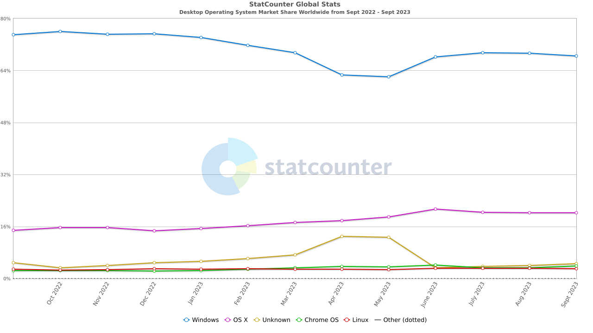
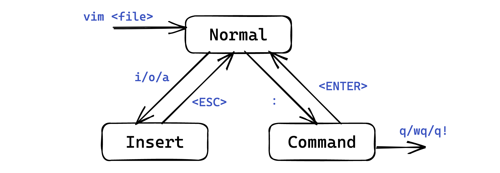
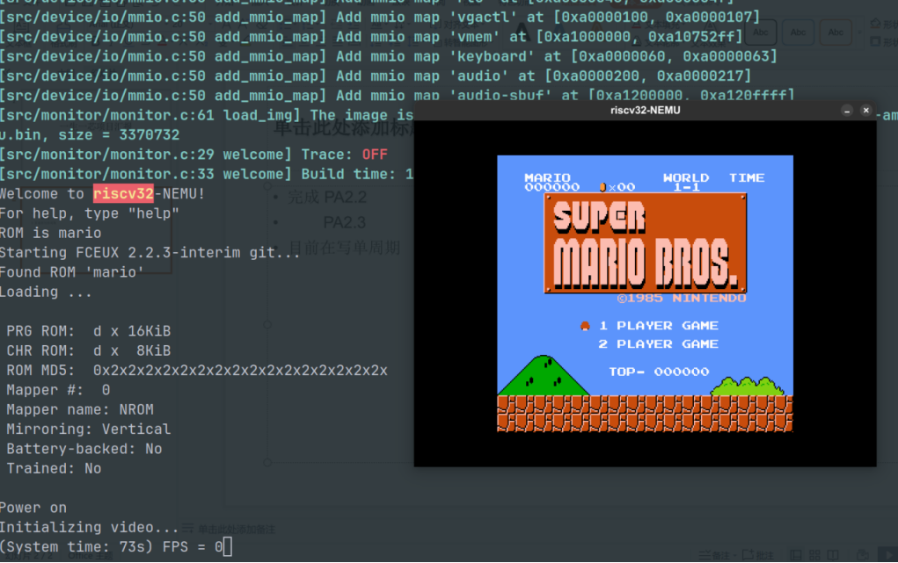

个人介绍
我是谁?
- 一个平平无奇的 CS 练习生
三无大学生- 喜欢 Linux 和 开源社区
- 有一些做海外公开课的经历
- 强推 CS61abc !
- 顺便安利下
一生一芯ysxy
分享会的内容
- 了解主流操作系统
- Linux 下工作流展示
- 介绍上古神器 Vim
- * 介绍 GUN Make
- * 介绍一些其他好用的 命令行工具
- 深入学习的方法
了解 Linux
主流操作系统介绍
- Microsoft Windows (1985.11.20)
- macOS (2001.3.24)
- Linux (1991.9.17)
Linux：我会为你提供一切必要的工具。请你为自己所敲的每一行命令负责。
macOS：我会尽可能地保护你。你可以不要我的保护，但若如此，请你为自己所敲的每一行命令负责。
Windows：我是你妈
市场份额

为什么不用 Windows？
- 臃肿，历史包袱太重
- 家庭版？旗舰版？专业版？企业版？专业工作站版？
- 适合使用，不适合开发
- 环境变量？缺
dll文件？包管理器？
- 环境变量？缺
- 闭源商业付费软件
- 兼容性
- Not software, but hardware
- 稳定性
- 你的电脑遇到问题，需要重新启动。你可以重新启动。
- 安全性
- 永恒之蓝（CVE-2017-0144）
- 远程桌面任意代码执行（CVE-2019-0708）
- 错误报告服务权限提升（CVE-2023-36874）
为什么用 Linux？
- 内核开源，社区维护
- Android OS
- torvalds/linux
- Free
- as in Free Beer and Free Speech
- 轻量级
- Alpine Linux 的 Docker 镜像仅 5MB
- 稳定性
- 兼容性
- 树莓派等单板计算机
- 最不极端的一集：在 Arduino Uno 上运行 Linux Kernel，主频 700Hz
--
- ~~看着比 Windows professional 到不知道哪里去了~~
主流的 Linux 发行版
- Slackware：历史最悠久的发行版
- Debian：历史第二悠久的发行版
- Arch Linux：可高度自定义的发行版
- Ubuntu：基于 Debian，最广泛使用的发行版
- Deepin：基于 Debian 的国产操作系统
- Red Hat Enterprise Linux：基于 CentOS 的商业发行版
- Kali Linux：基于 Debian，面向安全工作者的发行版
太多了，我该选哪一个
Linux 下工作流展示
在 Linux 下的四大件
Gui? CMD? TUI!
- 终端下文件浏览器
ranger
- 终端下文件编辑器
vim/neovim
- 终端复用器
tmux/zellij
- 终端下版本管理工具
lazygit
介绍 Vim
为什么使用 vim ?
- 能很大程度的提升编辑效率
- 可以提升写代码时的专注程度 (减小 context switch)
- vim 有着很好的插件生态
- 终端下的许多工具都使用 vim 风格的快捷键
- 即便你使用 windows, 不少 ide 也都提供 vim 模拟器插件 (JetBrain 系, VSCode, VS)
如何使用 vim
Q: 如何生成一段随机序列
A: 让新手退出 vim

- 如何退出 vim ?
- vim 操作模式介绍
- 插入模式 (insert mode)
- 普通模式 (normal mode)
- 命令行模式 (command line mode)
- 可视模式 (visual mode)
- 行可视模式 (visual line mode)
- 快可视模式 (visual block mode)
命令行和插入模式
- 命令行模式
- 进入 vim 时，按下
:进入命令行模式 - vim 有很多内置命令，这里介绍 help
- 不知道怎么进入插入模式?
:h insert
- 不知道怎么进入插入模式?
- 进入 vim 时，按下
在插入模式下，vim 的表现与其他编辑器无异
- 插入文本
- 进入 vim 后按下 i/a 键，就可以进入插入模式。
- i for insert
- a for append
- 进入 vim 后按下 i/a 键，就可以进入插入模式。
普通模式
在普通模式下，键盘上的每一个按键都是操纵文本的快捷键。一般来说，使用vim的大部分时间应该都处于普通模式。
- 移动
- hjkl (←↓↑→)
- b/w (向前/后移动一个单词)
- 0/$ (移动到行首/行尾)
- e (移动到单词末尾)
- {, } (向前/后移动一段)
- /, ? (向前/向后搜索)
- gg/G (文件最开始/最后)
- 编辑
- y/p (复制/粘贴)
- i/a (向前/后插入); o/O (在下/上一行插入)
可视模式
- v 进入 可视模式
- V 进入 可视行模式
- Ctrl-v 进入 可视快模式
进入可视模式，可以利用普通模式下的快捷键来选中、改动文本
- 修改
- c (删除选中文本，并且进入插入模式)
- d (删除选中文本，但仍然处于普通模式)
组合技
在普通模式下，可以通过 数字 + 命令 来重复执行指定命令
- 比如 7w 等价于按7次w
- 7dw 删除光标后7个单词
还可以通过指定文本对象来进行修改
- 比如 di(，删除括号内的所有内容
- da(, 删除括号内的所有内容，包括 括号本身
vim 使用进阶
- vim 的配置文件
- 宏/寄存器
- tab / buffer 是什么
- 如何编写 vimsript
GNU Make 介绍
为什么要使用 Make
Make 是一个自动化构建工具
- 对一个单独的c语言文件，我们可以直接在终端输入命令行来编译文件
gcc main.c -o main
./main
- 但是在现实生活中的项目往往有几十万行代码，上千个文件，这个时候我们怎么编译呢？
- 一个个敲文件名？
- 文件之间的依赖关系又怎么判断？
Makefile 的结构
target ... : prerequisites ...
command
...
...
- target 是目标文件
- prerequisites 是依赖文件
- command 是构建目标所需要执行的命令
- 在 command 前加 @ 表示执行, 但是不在终端打印
- 在 command 前加 - 表示报错也继续执行下去
如何编写 Makefile
我们从一个简单的例子学习编写 Makefile。
// main.c
#include <stdio.h>
int main() { printf("hello world!"); return 0; }
# Makefile
TARGET=foo
default: $(TARGET)
$(TARGET): foo.o
gcc foo.o -o foo
@./foo
foo.o: foo.c
gcc -c foo.c
特殊含意的宏
TARGET=foo
default: $(TARGET)
$(TARGET): %.o
gcc $^ -o $@
@./$@
%.o: %.c
gcc -c %@ %<
隐式规则
TARGET=foo
default: $(TARGET)
$(TARGET): %.o
gcc $^ -o $@
@./$@
深入学习
- Makefile 的一些内置函数
- 如何引用其他 Makfile
- 现代 Makefile: CMake, XMake
其他命令行工具
终端下使用工具推荐
- fd: 快速查找文件，find 的升级版
- rg: 快速在文件中查找指定的内容, grep 的升级版
- zoxide: 在不同目录间快速跳转, cd 的升级版
- fzf: 提供模糊查找功能
- btop / htop: 资源管理器
- neofetch: 显示系统信息,
装B专用 - awk / sed / grep: 文本三剑客
以下为没什么用的小工具
- cowsay
- sl
- lolcat
- figlet
如何深入学习
这么多内容，从哪开始好呢？
- 安装 Linux。(最好是真机, 如果觉得不能接受 Linux, WSL 也不错) Learn By Practice.
- STFM, STFW
- 百度搜索、百度知道、百度百科、CSDN？❌
- 必应搜索、谷歌搜索、Wikipedia、GitHub、StackOverflow！✅
提高自己的信息检索能力
鸣谢
- slide 内容部分来自浙大 朋辈辅学
- 与 Vim 相关的视频推荐:
- 与 Shell 相关的课程推荐
- MIT 的 the missing semester of your cs eduction
- UCB 的 sysadmin
-
与 Makfile 相关的课程推荐
-
公开课
ysyx 介绍
- 融合了南京大学PA, 让你从 0 开始 搭建一个属于自己的RISC-V处理器。
处理器 -> 操作系统 -> 应用程序
- 最后可以在自己写的处理器上跑 仙剑！

- Base 基础
- Advaneced 高级
-
- Super